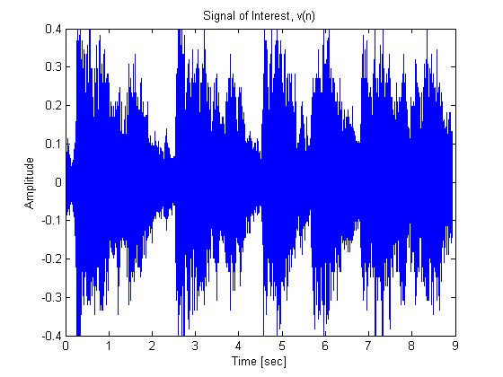
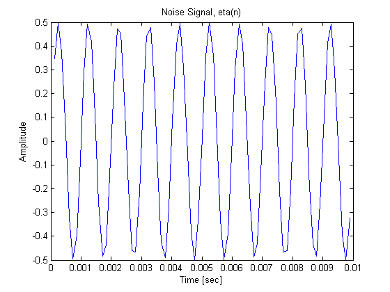
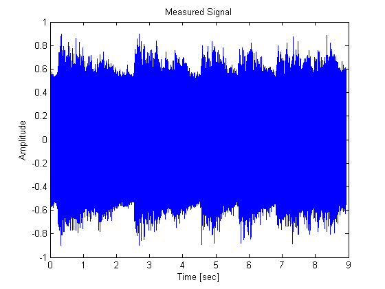
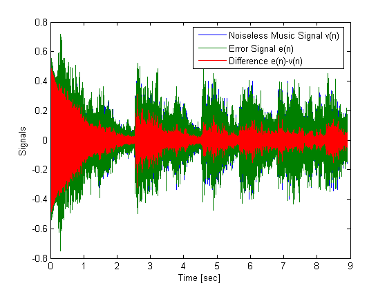
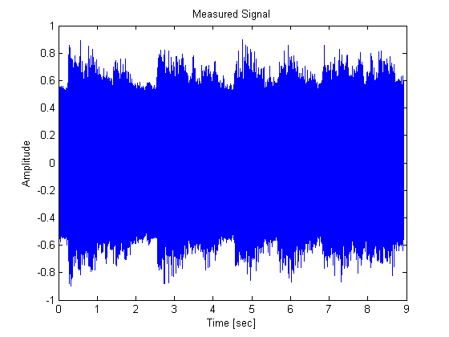
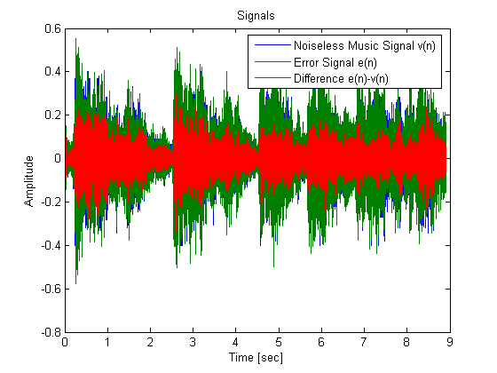

This demonstration illustrates the application of adaptive filters to signal separation using a structure called an adaptive line enhancer (ALE). In adaptive line enhancement, a measured signal x(n) contains two signals, an unknown signal of interest v(n), and a nearly-periodic noise signal eta(n).
The goal is to remove the noise signal from the measured signal to obtain the signal of interest.
Author(s): Scott C. Douglas
We'll first load in a signal of interest, a short clip from Handel's Hallelujah chorus.
load handel v = y'/2; plot((1:length(v))/Fs,v); xlabel('Time [sec]'); ylabel('Amplitude'); title('Signal of Interest, v(n)');
You can listen to the signal of interest using MATLAB's SOUND function.
sound(v,Fs)
Let's now make a periodic noise signal--a sinusoid with a frequency of 1000 Hz.
eta = 0.5*sin(2*pi/Fs*1000*(1:length(v)));
Now let's plot 10 msec of this sinusoid above. It shows 10 periods in 10 msec, just as it should.
plot(1/Fs:1/Fs:0.01,eta(1:floor(0.01*Fs))); xlabel('Time [sec]'); ylabel('Amplitude'); title('Noise Signal, eta(n)');
The periodic noise is a pure tone. The following code plays one second of the noise signal.
sound(eta(1:Fs),Fs)
The signal that we actually measure is the sum of these two signals, and we'll call this signal s(n).
s = v + eta;
A plot of s(n) shows that the envelope of the music signal is largely obscured. Listening to a 2.5-second clip from the measured signal, the noise is clearly prominent...
plot((1:length(s))/Fs,s); xlabel('Time [sec]'); ylabel('Amplitude'); title('Measured Signal'); sound(s(1:2.5*Fs),Fs);
An adaptive line enhancer (ALE) is based on the straightforward concept of linear prediction. A nearly-periodic signal can be perfectly predicted using linear combinations of its past samples, whereas a non-periodic signal cannot. So, a delayed version of the measured signal s(n-D) is used as the reference input signal x(n) to the adaptive filter, and the desired response signal d(n) is made equal to s(n). The parameters to choose in such a system are the signal delay D and the filter length L used in the adaptive linear estimate. The amount of delay depends on the amount of correlation in the signal of interest. Since we don't have this signal (if we did, we wouldn't need the ALE!), we shall just pick a value of D=100 and vary it later. Such a choice suggests that samples of the Hallelujah Chorus are uncorrelated if they are more than about 12 msec apart. Also, we'll choose a value of L=32 for the adaptive filter, although this too could be changed.
D = 100; L = 32;
Finally, we shall be using some block adaptive algorithms that require the lengths of the vectors for x(n) and d(n) to be integer multiples of the block length. We'll choose a block length of N=32 with which to begin.
N = 32; ntr = N*floor((length(v)-D)/N); x = s(1:ntr); d = s(1+D:ntr+D);
The first algorithm we shall explore is the Block LMS algorithm. This algorithm is similar to the well-known least-mean-square (LMS) algorithm, except that it employs block coefficient updates instead of sample-by-sample coefficient updates. It also runs efficiently in MATLAB when the block lengths are more than a few samples. The Block LMS algorithm needs an initial coefficient vector W0, a block length N, and a step size value mu. We'll set W0 to be an all-zero vector of length L, and N is already defined. How do we pick mu? Let's start with a value of mu = 0.0001 and refine it shortly.
mu = 0.0001;
leak = 1; % No leakage
h = adaptfilt.blms(L,mu,leak,N);
The Filter Design Toolbox has some built-in analysis functionality for some of its adaptive filters. These analysis files can, among other things, compute upper step size bounds as suggested by statistical analyses of the adaptive algorithm. We can "run" these analyses by calling them just like their adaptive algorithm counterparts. Running the Block LMS analysis function, we get the following mean and mean-square step size bounds:
[mumax,mumaxmse] = maxstep(h,x)
mumax =
0.4636
mumaxmse =
0.1545
So, our chosen step size of mu=0.0001 is well within the stability regions of both mean and mean-square analyses. Let's run the algorithm...
The output signal y(n) should largely contain the periodic sinusoid, whereas the error signal e(n) should contain the musical information, if we've done everything right. Since we have the original music signal v(n), we can plot e(n) vs. v(n) on the same plot shown above along with the residual signal e(n)-v(n). It looks like the system is converged after about 5 seconds of adaptation with this step size.
[y,e] = filter(h,x,d); plot(1/Fs:1/Fs:ntr/Fs,v(1+D:ntr+D),1/Fs:1/Fs:ntr/Fs,e,1/Fs:1/Fs:ntr/Fs,e-v(1+D:ntr+D)); xlabel('Time [sec]'); ylabel('Signals'); legend('Noiseless Music Signal v(n)','Error Signal e(n)','Difference e(n)-v(n)');
The real proof, however, is in the listening; The following code allows you to hear the error signal e(n)...
sound(e,Fs);
Notice how the sinusoidal noise decays away slowly. This behavior is due to the adaptation of the filter coefficients toward their optimum values.
We can listen to the residual signal e(n)-v(n) as well to hear what is left over in the error signal.
sound(e-v(1+D:ntr+D),Fs);
Notice how this residual signal sounds like a hollow and quieter version of the original music once the adaptive filter has converged. That is why we don't hear it; it simply changes the frequency content of the music a little bit. Remember, a linear filter cannot totally separate signals that are overlapped in frequency, so we can expect some errors in the output. We won't listen to the adaptive filter output y(n); it sounds like a 1000 Hz tone subtracted from this same small residual signal.
Now, removing a pure sinusoid from a sinusoid plus music signal is not particularly challenging if the frequency of the offending sinusoid is known. A simple two-pole, two-zero notch filter can perform this task. So, let's make the problem a bit harder by adding an FM-modulated sinusoidal signal as our noise source.
eta = 0.5*sin(2*pi*1000/Fs*(1:length(s))+10*sin(2*pi/Fs*(1:length(s)))); s = v + eta; plot((1:length(s))/Fs,s); xlabel('Time [sec]'); ylabel('Amplitude'); Title('Measured Signal');
Warning: Function call Title invokes inexact match G:\build\matlab\toolbox\matlab\graph2d\title.m.
Let's listen to the music+noise signal s(n) = v(n) + eta(n) now...
sound(s(1:4.5*Fs),Fs);
The "warble" in the signal is clearly audible. A fixed-coefficient notch filter won't remove the FM-modulated sinusoid. Let's see if the Block LMS-based ALE can. We'll increase the step size value to mu=0.005 to help the ALE track the variations in the noise signal.
mu = 0.005; x = s(1:ntr); d = s(1+D:ntr+D); h = adaptfilt.blms(L,mu,leak,N);
We now filter the noisy music signal with the adaptive filter and compare the error to the noiseless music signal.
[y,e] = filter(h,x,d); plot(1/Fs:1/Fs:ntr/Fs,v(1+D:ntr+D),1/Fs:1/Fs:ntr/Fs,e,1/Fs:1/Fs:ntr/Fs,e-v(1+D:ntr+D)); xlabel('Time [sec]'); ylabel('Amplitude'); Title('Signals'); legend('Noiseless Music Signal v(n)','Error Signal e(n)','Difference e(n)-v(n)');
This time, the results aren't as impressive, but the offending noise is still attenuated relative to its original level.
If you listen to the error signal you will notice that the residual is fairly large, but the music masks the warble tone somewhat.
sound(e,Fs);
Better performance might be obtained with a more advanced algorithm, such as the Block Affine Projection (BAP) algorithm or one of the frequency-domain adaptive filters found in the Filter Design Toolbox. Type "help adaptfilt" to learn about the other adaptive filter algorithms.